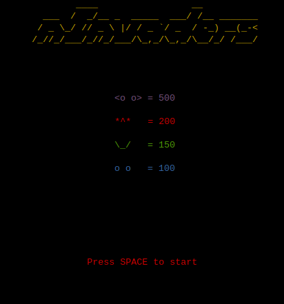

Jogos no terminal:
Sim, pelo incrível que pareça, tem como jogar no terminal e vou te mostrar alguns jogos bem divertidos até,
que bem claro que não é grande coisa, mas eles são bons para passar o tempo.
gnuchess:
Já pensou em jogar xadrez no terminal? Pois e isso é possível, só a forma de jogar que é estranha, já que você terá que escrever, e bem
eu não ensino xadrez aqui no site, mas uma dica? No site https://www.chess.com/ que ensina xadrez e que você
pode jogar com outras pessoas, bem do lado na hora da partida mostra algumas escritas como por exemplo "e4" quando você move o peão.
Como instalar:
Apenas use: sudo apt install gnuchess
nsnake:

Já pensou em jogar o jogo da cobrinha no terminal? Se liga nesse comando que legal então,
literalmente você joga o jogo da cobrinha que provavelmente todo mundo já jogou, só que no terminal.
(Para instalar use: sudo apt install nsnake)
ninvaders:

Outro jogo legal que provavelmente todo mundo já jogou, e sim ele pode ser jogado no terminal (Para baixá-lo use: sudo apt install ninvaders).
oneko:
Com o comando oneko simplesmente vai aparecer um gato no seu terminal que irá perseguir seu mouse é muito fofo e
divertido (Para baixar use: sudo apt install oneko)
sl:
Com o comando sl literalmente irá aparecer um trem no seu terminal, pode não ser um jogo, mas é divertido e legal (Para baixar é só usar: apt install sl)